📑来源信息
📝核心内容摘要
课题名称
具身智能领域开源代码论文推荐合集（2026-05-06）
研究背景与痛点
具身智能（Embodied AI）是连接人工智能与物理世界的核心方向，涵盖机器人导航、操作、感知、交互等多个子领域。该领域研究进展迅速，但高质量开源代码和数据集相对分散，研究者需要花费大量时间搜集箿选。
1. Walk with Me人基于高层人类指令的无地图长视野户外社交导航
Social Navigation · VLM · VLA · Human-Robot Interaction
融合VLM语义理解与VLA局部控制，仅利用公共地图服务的轻量级先验，实现从抽象指令到公里级户外社交导航
将高层语义意图理解与低层安全社交执行巧妙分离，并利用公共地图轻量级先验，为户外移动机器人的实用化开辟了新路径。
↗ 项目主页
2. HiPAN人四足机器人在非结构化3D环境中的分层姿态自适应导航
Quadruped Robot · RL · Vision-Based Navigation · Posture Adaptation
结合高层导航策略与低层姿态自适应控制器，并引入路径引导课程学习
将二走哪条路与二怎么走过去分层解耦，通过课程学习逐步拓展视野，成功率96.5%。
↗ 项目主页
3. RADIO-ViPE人动态场景下基于紧耦合多模态融合的开放词汇语义SLAM
Semantic SLAM · Open-Vocabulary · Multi-Modal Fusion
我需标定、深度传感器或位姿先验，仅从单目RGB视频流中实现在线开放词汇语义建图与定位
将强大的视觉-语言先验与几何优化紧耦合，让语义SLAM真正迈向开箱即用的开放世界。
↗ 项目主页
4. KinDER人面向机器人学习与规划的物理推理基准测试
Physical Reasoning · Robot Learning · TAMP · RL
25个程序化生成环境、Gymnasium接口与13个基线模型的物理推理基准
为物理推理提供了解耦的测试平台，有望成为机器人规划与学习研究的共同起点。
↗ 项目主页
5. SlicerRoboTMS人面向机器人辅助经颅磁刺激的开源3D Slicer扩展
Image-Guided Intervention · Medical Robot · TMS · 3D Slicer
首个专为Robo-TMS设计的开源3D Slicer扩展，实现MRI神经导航与机器人系统的标准化集成
通过标准化工具体系解耦影像导航与硬件控制，让研究者聚焦算法创新而非底层集成。
↗ GitHub
6. 面向灵巧手的基于任务的协同设计优化框架
Dexterous Hand · Co-Design Optimization · Grasp Stability
统一参数化手掌、手指运动学、指尖几何与表面曲率，实现从结构到接触的全维度手部设计-控制联合优化
将手部形态视为可编程变量，通过协同优化使形态与控制共同进化。
↗ 项目主页
🗣️科学与工程价值
- 为具身智能研究者提供了开箱即用的代码和数据入口，降低复现与扩展成本
- 覆盖导航、操作、感知、医疗应用等多个关键方向，具有广泛参考价值
- 含基准测试框架和协同设计方法论，有助于推动领域标准化和跨学科合作
- 体现了开源精神在机器人领域的重要作用，促进快速迭代与创新
📄原文配图
兠11张 · 含论文介绍图片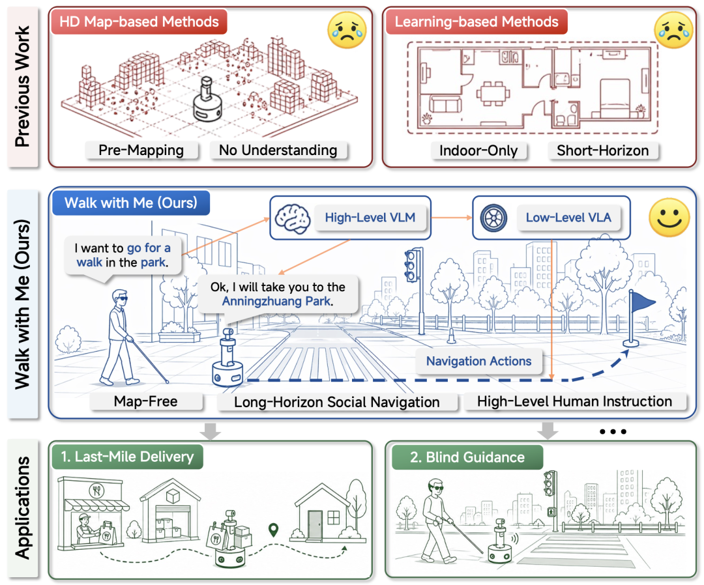
1配图 1
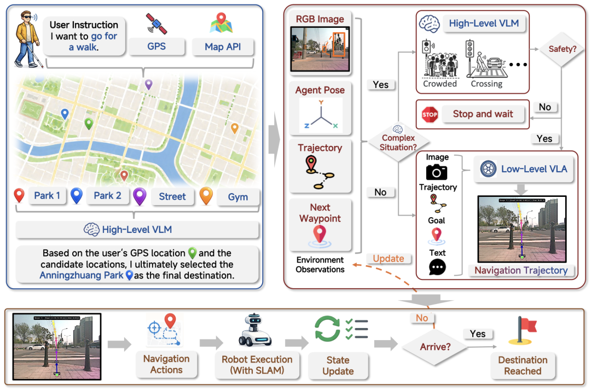
2配图 2
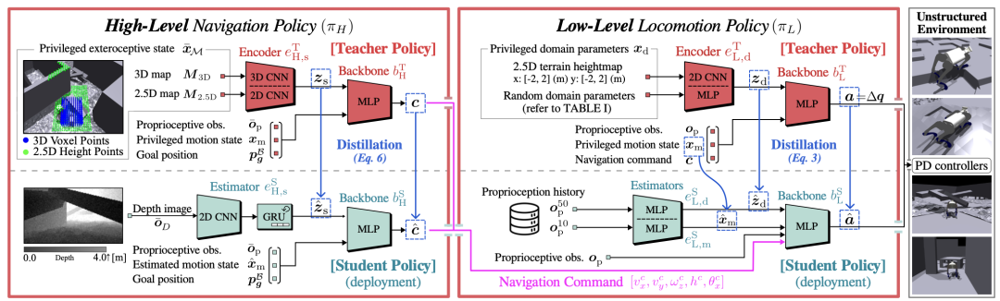
3配图 3
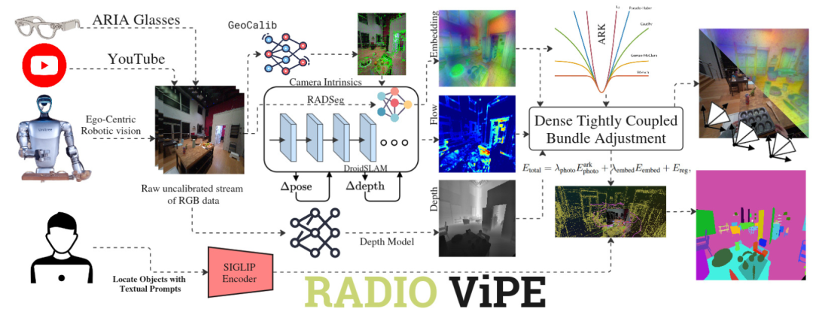
4配图 4
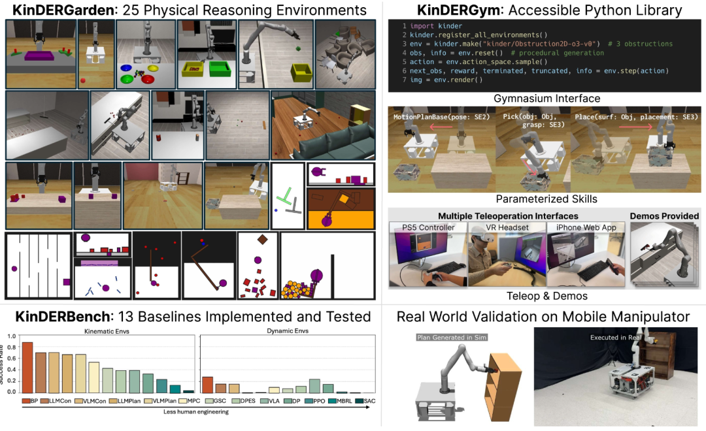
5配图 5
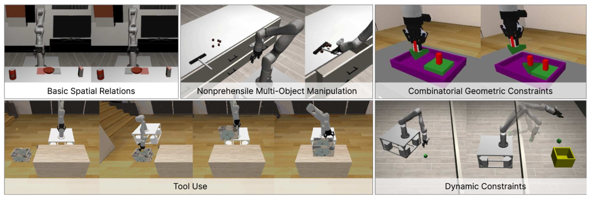
6配图 6
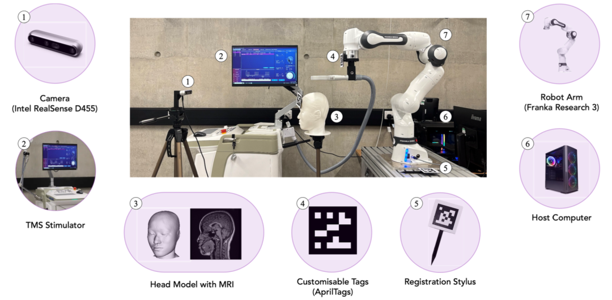
7配图 7
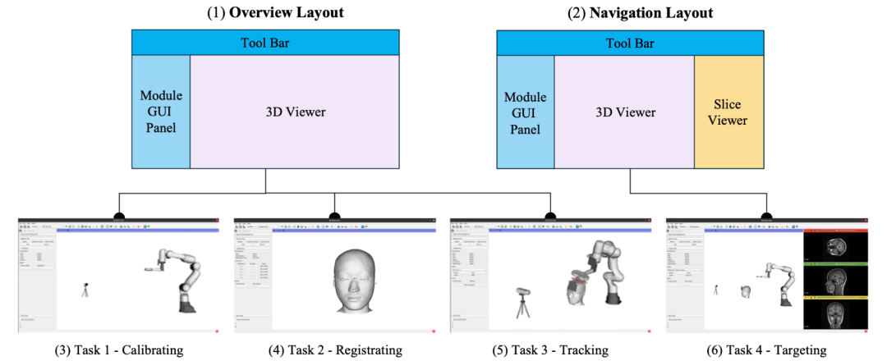
8配图 8
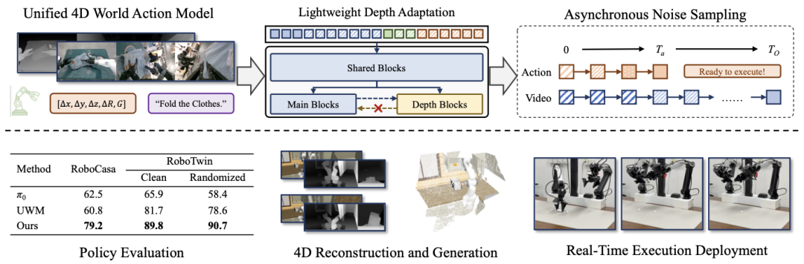
9配图 9
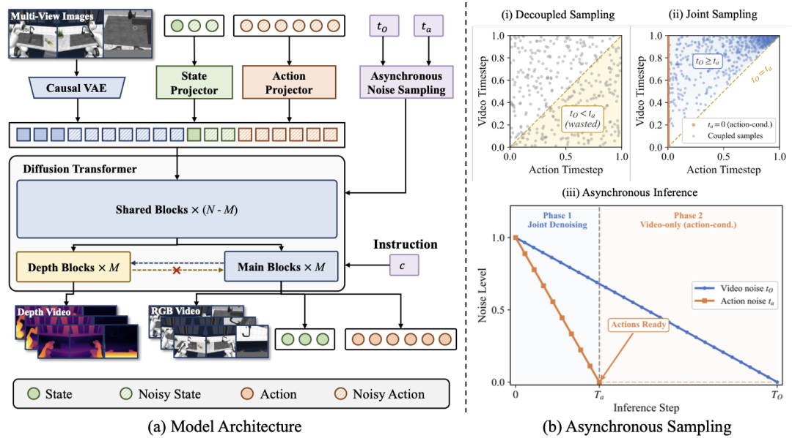
10配图 10
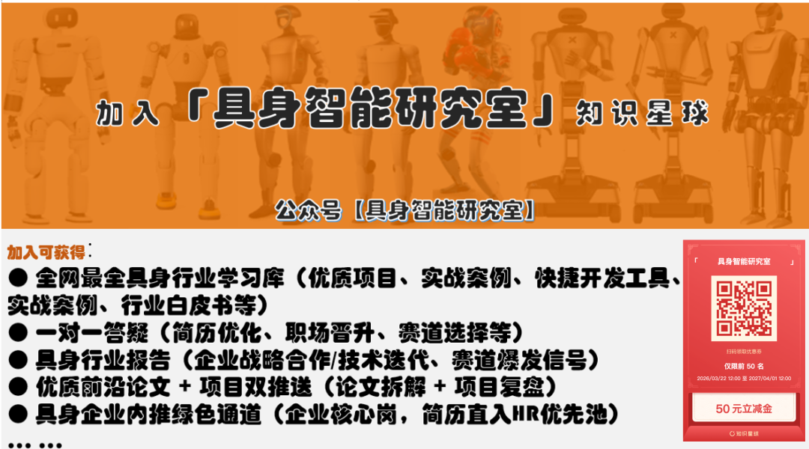
11配图 11
🖼完整截图存档
包含完整页面截图及原始图片。图片为原文内容的完整备份。